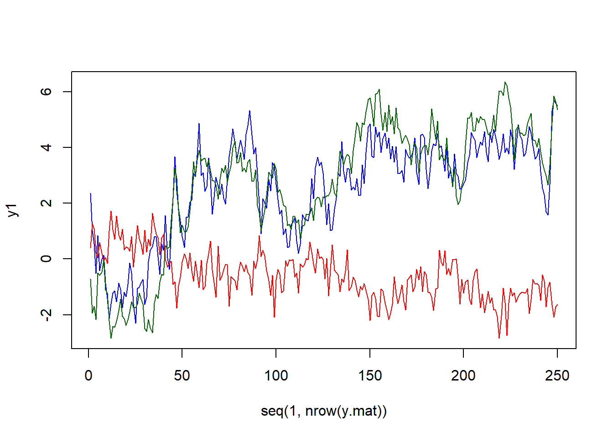
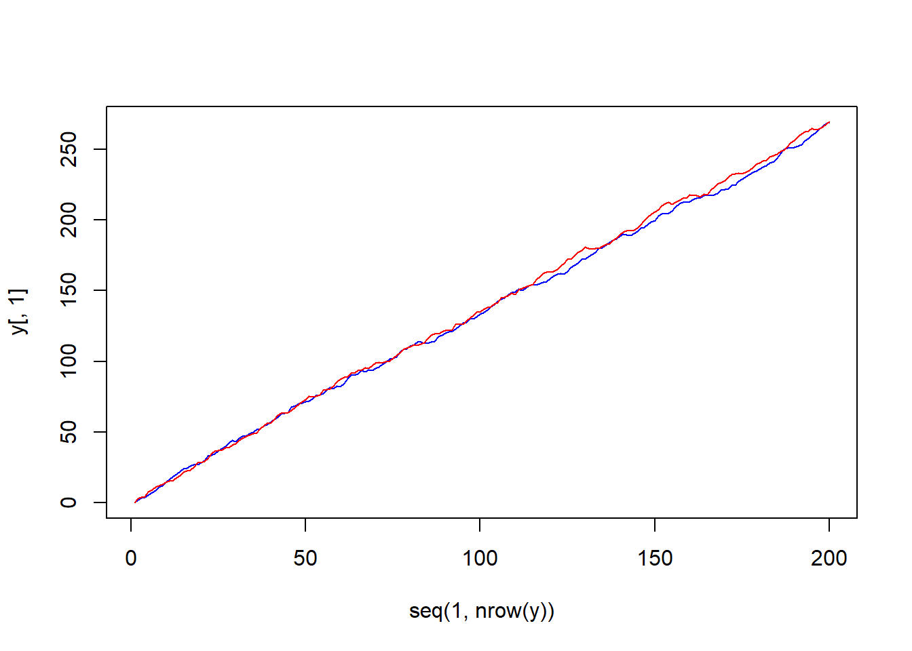

6 Topic 04
Complete model:
\[\begin{align*} \Delta y_{t} =\mu_{0} + \mu_{1}t + \alpha\beta^{'}y_{t-1} \end{align*}\]
Deterministic terms:
\[\begin{align*} \mu_{j} &= \delta_{j} + \alpha\beta_{j}^{'} \\ \underset{\left(N\times 1\right)}{\mu_{j}} &= \underset{\left(N\times 1\right)}{\delta_{j}} + \underset{\left(N\times r\right)}{\alpha}\underset{\left(r\times 1\right)}{\beta^{'}_{j}} \end{align*}\]
Simulation
Model 1
- No deterministic terms
…
Model 2
- Constant restricted to the cointegrating space only
- See with some adjustments
library(urca)
set.seed(12345)
e1 <- rnorm(250, 0, 0.5)
e2 <- rnorm(250, 0, 0.5)
e3 <- rnorm(250, 0, 0.5)
u1.ar1 <- arima.sim(model = list(ar = 0.75),
innov = e1, n = 250)
u2.ar1 <- arima.sim(model = list(ar = 0.3),
innov = e2, n = 250)
y3 <- cumsum(e3)
y1 <- 0.1 + 0.8 * y3 + u1.ar1
y2 <- 0.2 - 0.3 * y3 + u2.ar1
y.mat <- data.frame(y1, y2, y3)
vecm <- ca.jo(y.mat)
jo.results <- summary(vecm)
vecm.r2 <- cajorls(vecm, r = 2)
class(jo.results)## [1] "sumurca"
## attr(,"package")
## [1] "urca"slotNames(jo.results)## [1] "classname" "test.name" "testreg" "teststat" "cval" "bpoint"
## [7] "signif" "model" "type" "auxstat" "lag" "H"
## [13] "A" "lambda" "pval" "V" "W" "P"plot(seq(1, nrow(y.mat)),
y1,
col = "blue",
type = "l",
ylim = c(min(y1, y2, y3), max(y1, y2, y3)))
lines(seq(1, nrow(y.mat)),
y2,
col = "red",
type = "l")
lines(seq(1, nrow(y.mat)),
y3,
col = "darkgreen",
type = "l")
Model 3
- Unrestricted constant
- MHH, 2011, (p. 767)
library(MASS)
# Specify model
beta <- c(1,-1) # Normalized cointegrating vector
beta0 <- 2 # Long-run constant
beta1 <- 0 # Long-run time trend
alpha <- c(-0.1,0.1) # Error-correction parameters
alpha0 <- Null(alpha %*% t(alpha))
delta0 <- alpha0*2 # Short-run intercepts using orthogonal complement of alpha
delta1 <- alpha0*0 # Short-run time trend using orthogonal complement of alpha
# Simulate model
t <- 200
y <- array(0, c(t,2))
v <- array(rnorm(t*2), c(t,2))
for (j in 2:t) {
u <- beta0 + beta1*j + y[j-1,] %*% beta
y[j,] <- y[j-1,] + t(delta0 + delta1*j + alpha*u) + v[j,]
}plot(seq(1, nrow(y)),
y[,1],
col = "blue",
type = "l",
ylim = c(min(y), max(y)))
lines(seq(1, nrow(y)),
y[,2],
col = "red",
type = "l")
\begin{align*} {j} = {}({}^{‘}{})^{-1}{}^{’}{j} \end{align’}